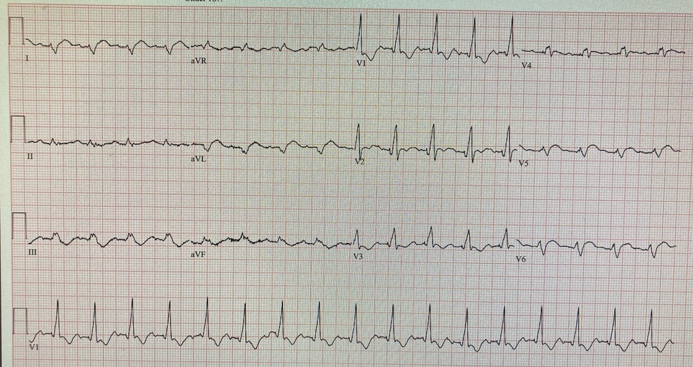
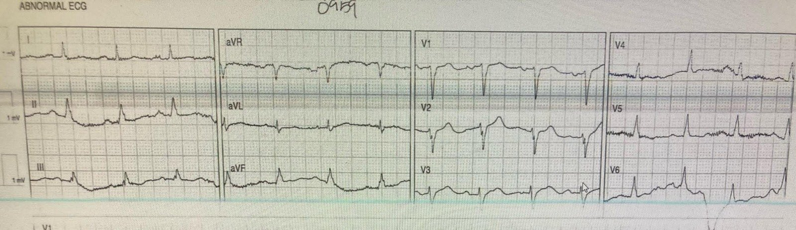
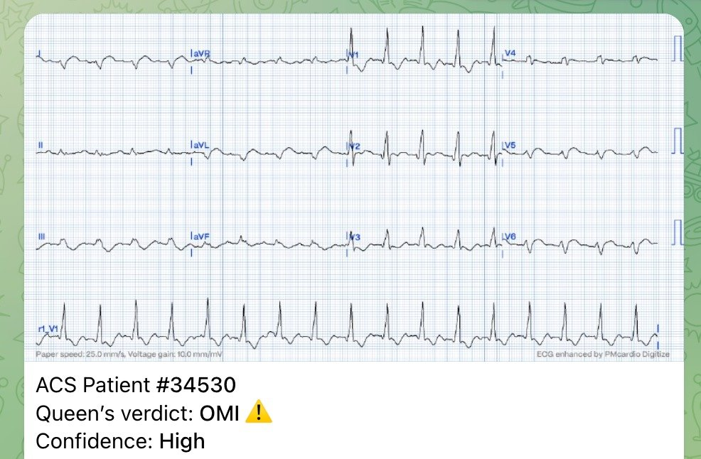
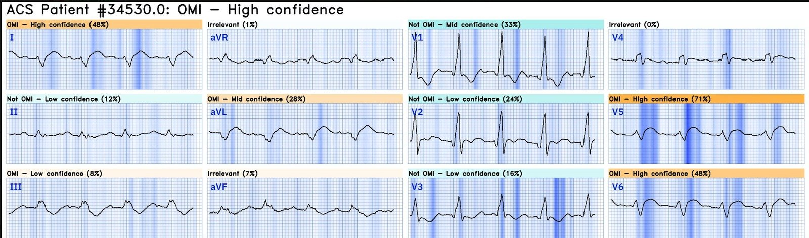
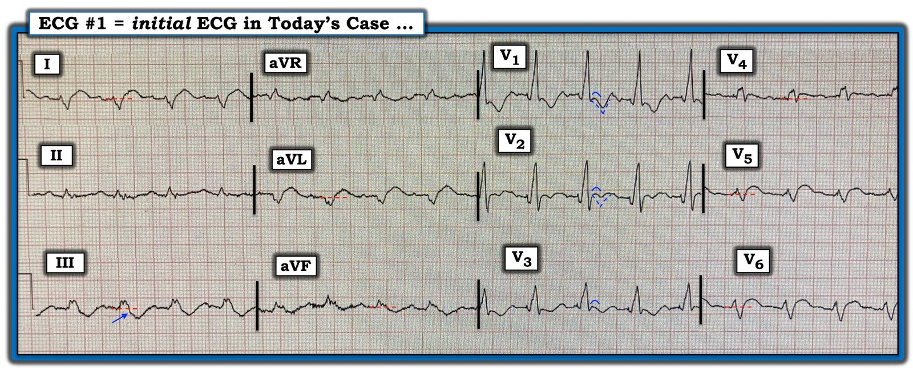

16/04/2024 — Mô hình STEMI hiện nay: Vì chưa đạt tiêu chuẩn STEMI, hãy chờ cho đến khi cơ tim chết hẳn!!
Bản dịch tiếng Việt của bài "The current STEMI paradigm: Because STEMI criteria are not met, let’s wait until the myocardium is dead!!" – Dr. Smith’s ECG Blog. Giữ nguyên toàn bộ 6 hình ảnh của bản gốc.
Ca này do một điều dưỡng khu điều trị nội trú gửi cho tôi; người này đọc blog nhưng muốn giấu tên.
Một cuộc gọi đội phản ứng nhanh (rapid response) trong bệnh viện được kích hoạt cho một bệnh nhân tụt huyết áp.
Bệnh nhân ban đầu nhập viện vì viêm phổi và đã được chuyển ra khỏi
ICU một ngày trước đó. Ông có tiền sử suy tim phân suất tống máu giảm (HFrEF), tăng huyết áp (HTN) và bạch cầu cấp dòng tủy (AML).
“Khi tôi
đến, huyết áp của ông khoảng 70 mấy/40 mấy, da tái nhợt và
vã mồ hôi đầm đìa.”
“Ông nói tiếng Tây Ban Nha nhưng chúng tôi cũng suy ra được là ông đau ngực mức 7/10, lan ra
sau lưng.”
“Ban đầu chúng tôi không liên lạc được với bác sĩ điều trị chính, nhưng
bệnh viện chúng tôi cho phép điều dưỡng đội phản ứng nhanh bắt đầu làm các thăm dò đánh giá theo
phác đồ/y lệnh thường quy, nên tôi đã ghi các điện tâm đồ liên tiếp, làm xét nghiệm troponin độ nhạy
cao, và cho dùng aspirin.”
Đây là điện tâm đồ:


Kết quả đọc bằng máy tính thông thường là “Nhịp xoang bình thường. Blốc nhánh phải”
Bạn nghĩ gì?
Smith: điện tâm đồ có RBBB này có giá trị chẩn đoán tắc LAD đoạn gần (OMI). Việc không có ST chênh lên là không quan trọng. Có ST chênh lên (STE) ﹤1 mm ở I, aVL, V5 và V6 (không đạt “tiêu chuẩn” STEMI), và có sóng T tối cấp (hyperacute T waves) ở I, aVL, V5 và V6.
Người điều dưỡng này, vốn thường xuyên đọc blog, đã lập tức nhận ra OMI, dù không đạt tiêu chuẩn ST chênh lên.
Điều dưỡng: “Tôi so sánh nó với điện tâm đồ lúc nhập viện bốn ngày trước, điều đó khiến tôi
càng lo lắng hơn.”
Đây là điện tâm đồ trước đó:


Không có RBBB, và không có sóng T tối cấp
Lẽ ra không cần phải tìm và xem điện tâm đồ trước đó mới chẩn đoán được!
“Tôi gọi cho bác sĩ tim mạch can thiệp và gửi họ
ảnh chụp điện tâm đồ nền cũng như các điện tâm đồ liên tiếp ngay trong cuộc gọi,
và giải thích bệnh cảnh của bệnh nhân.”
“Họ trả lời rằng
điện tâm đồ “không đạt tiêu chuẩn STEMI” nhưng họ sẽ đến đánh giá
tại giường.”
“Họ đồng ý với tôi rằng bệnh cảnh rất
đáng lo ngại nhưng ban đầu định chờ vài giờ (!!) rồi mới đưa
bệnh nhân đi thông tim vào cuối buổi chiều.”
Smith: chờ đợi chỉ làm mất thêm cơ tim không hồi phục, kéo theo suy tim và tử vong. Tại sao lại có người muốn chờ?? Đừng chờ!!
“May mắn là sau khi chúng tôi chuyển
bệnh nhân lên đơn vị chăm sóc mạch vành (CCU), đội hồi sức đã làm siêu âm tim tại giường
cho thấy giảm động thất trái, và họ lập tức đưa bệnh nhân vào
phòng thông tim (cath lab).”
Chậm trễ do không đạt tiêu chuẩn STEMI: Nếu không làm siêu âm tim ở ICU thì sự chậm trễ sẽ kéo dài vài giờ; thực tế đã xảy ra là chậm trễ thêm một giờ.
Điều dưỡng: “Họ tìm thấy tắc LAD đoạn gần do huyết khối với dòng chảy TIMI 0
và bệnh nhân được đặt hai stent.”
Troponin I độ nhạy cao ban đầu là 15 ng/L (dưới giới hạn trên tham chiếu (URL)). Nếu dựa vào troponin thì can thiệp đã bị trì hoãn — đừng dùng troponin để ra quyết định khi điện tâm đồ đã có giá trị chẩn đoán!
Smith: Tôi đã gửi điện tâm đồ chẩn đoán này cho Queen of Hearts:


Và đây là phần giải thích (explainability):


Bạn có thể thấy Queen nhận ra các sóng T tối cấp ở I, aVL, V5 và V6.
Ứng dụng Queen of Hearts PM Cardio hiện đã có mặt tại Liên minh châu Âu (được chứng nhận CE) trên App Store và Google Play. Với độc giả Mỹ, bạn cần chờ FDA. Nhưng trong lúc chờ đợi:
BẠN CÓ CƠ HỘI ĐƯỢC TRUY CẬP SỚM VÀO BOT AI PM Cardio!! (ỨNG DỤNG AI OMI CỦA PM CARDIO)
Nếu bạn muốn bot này giúp bạn chẩn đoán sớm OMI và cứu bệnh nhân cùng cơ tim của họ, bạn có thể đăng ký để nhận phiên bản beta sớm của bot tại đây. Bot chưa được phát hành, nhưng đây là cách để bạn có tên trong danh sách.
https://share-eu1.hsforms.com/18cAH0ZK0RoiVG3RjC5dYdwfyfsg (biểu mẫu đăng ký nhận bản beta sớm của bot AI PM Cardio)
Những điểm cần học:
1. Bằng cấp của một người ít liên quan đến khả năng đọc điện tâm đồ để nhận ra OMI. Việc này đòi hỏi một năng khiếu thị giác nhất định, rất nhiều luyện tập và, trên hết, khả năng giải phóng tâm trí khỏi những lối nhìn cũ. Một số người giỏi nhất là các kỹ thuật viên điện tâm đồ hoàn toàn không được đào tạo y khoa. Điều dưỡng, nhân viên cấp cứu ngoài viện, bác sĩ nội trú năm nhất (intern). Tất cả đều có thể trở thành chuyên gia về việc này.
2. Queen of Hearts thật tuyệt vời.

===================================
BÌNH LUẬN CỦA TÔI, bởi KEN GRAUER, MD (16/4/2024):
===================================
Một ca quan trọng vì những lý do Dr. Smith đã nêu ở trên. Tôi xin bổ sung vài suy nghĩ sau về việc diễn giải điện tâm đồ ban đầu trong ca hôm nay, mà tôi đã sao chép lại và đánh dấu ở Hình 1.
- Trước hết — xin nhấn mạnh bệnh cảnh của bệnh nhân hôm nay: Bệnh nhân này vừa được chuyển ra khỏi ICU một ngày trước đó — và giờ xuất hiện CP mới (Chest Pain — đau ngực) kèm tụt huyết áp. Tiền sử bệnh của ông gồm HFrEF và tăng huyết áp — và ông đang có nhịp tim nhanh. Khó mà tưởng tượng được một bệnh cảnh lâm sàng nào đáng lo ngại hơn (do đó — chúng ta cần loại trừ chứ không phải “xác định” một biến cố cấp tính).
Ngay cả trước khi xem điện tâm đồ trước đó của bệnh nhân, ghi chỉ 4 ngày trước — chúng ta đã thấy những điều sau ở Hình 1:
- Nhịp nhanh xoang (kèm đau ngực mới và tụt huyết áp) = một dấu hiệu rất đáng lo ngại!
- Blốc hai phân nhánh (RBBB/LPHB).
- Bất thường sóng ST-T ở nhiều chuyển đạo — mà theo Dr. Smith (ngay cả trước khi so sánh với điện tâm đồ 4 ngày trước) là có giá trị chẩn đoán OMI LAD đoạn gần cấp.
Xem kỹ hơn các dấu hiệu điện tâm đồ cụ thể mà tôi đã đánh dấu ở Hình 1:
- Thông thường với RBBB đơn thuần — có ST-T chênh xuống ở ít nhất vài chuyển đạo trước tim. Không nên có đoạn ST dạng vòm (coving) như thấy ở điện tâm đồ #1 (mà tôi làm nổi bật bằng các đường cong vòm màu XANH dạng “mặt mếu” do tôi vẽ ở các chuyển đạo V1,V2,V3).
- Tôi đã vẽ chồng một đường chấm XANH ở chuyển đạo V1,V2 để chỉ độ sâu xấp xỉ mà tôi mong đợi thấy ở ST chênh xuống trong các chuyển đạo này khi có RBBB không biến chứng (nhất là khi sóng R’ ở chuyển đạo V1 cao một cách bất ngờ). Việc không có ST-T chênh xuống nào ở chuyển đạo V2 (và ở mức độ ít hơn, lượng ST-T chênh xuống ít hơn dự kiến ở V1) gần như chắc chắn là kết quả của sự triệt tiêu một phần bởi thứ mà lẽ ra nhiều khả năng sẽ là ST chênh lên ở thành trước.
- Các đường chấm ĐỎ ở chuyển đạo I, aVL; V4,V5,V6 được vẽ tại đường nền đoạn ST. Do đoạn ST dạng vòm ở mỗi chuyển đạo này (mà theo Dr. Smith — phản ánh rõ ràng sóng ST-T tối cấp ở các chuyển đạo này) — với các đoạn ST trơn láng như vậy, khó biết “điểm J” thực sự nằm ở đâu — nhưng dù mức độ không lớn — tôi đánh giá đoạn ST ở cả 5 chuyển đạo này là chênh lên (đặc biệt ở chuyển đạo V4).
- Các đường chấm ĐỎ ở các chuyển đạo dưới III và aVF cũng được vẽ tại đường nền đoạn ST. Tôi đánh giá ST-T chênh xuống ở 2 chuyển đạo dưới này là phù hợp với thay đổi soi gương trong OMI LAD đoạn gần cấp.
- ĐIỀU CỐT LÕI: Nếu tính thêm ST-T dẹt bất thường ở chuyển đạo II — thì, ngoài nhịp nhanh xoang và blốc hai phân nhánh (RBBB/LPHB) ở bệnh nhân có bệnh cảnh lâm sàng rất đáng lo ngại này — còn có các thay đổi ST-T đáng lo ngại, trông có vẻ cấp tính ở 11/12 chuyển đạo (tức là ở tất cả các chuyển đạo trừ aVR).
- Như Dr. Smith đã nói — thật khó hiểu vì sao lại có người muốn trì hoãn thông tim và PCI ngay lập tức ở bệnh nhân này, người mà theo mọi bằng chứng dường như đang trên đà tiến triển tới sốc tim.

